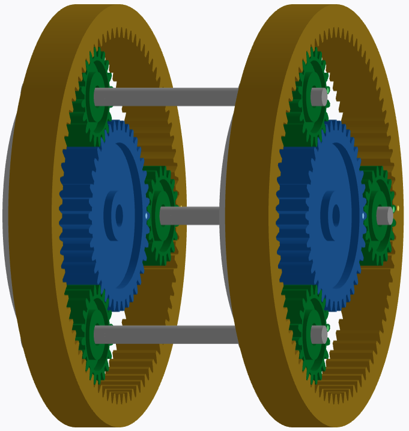
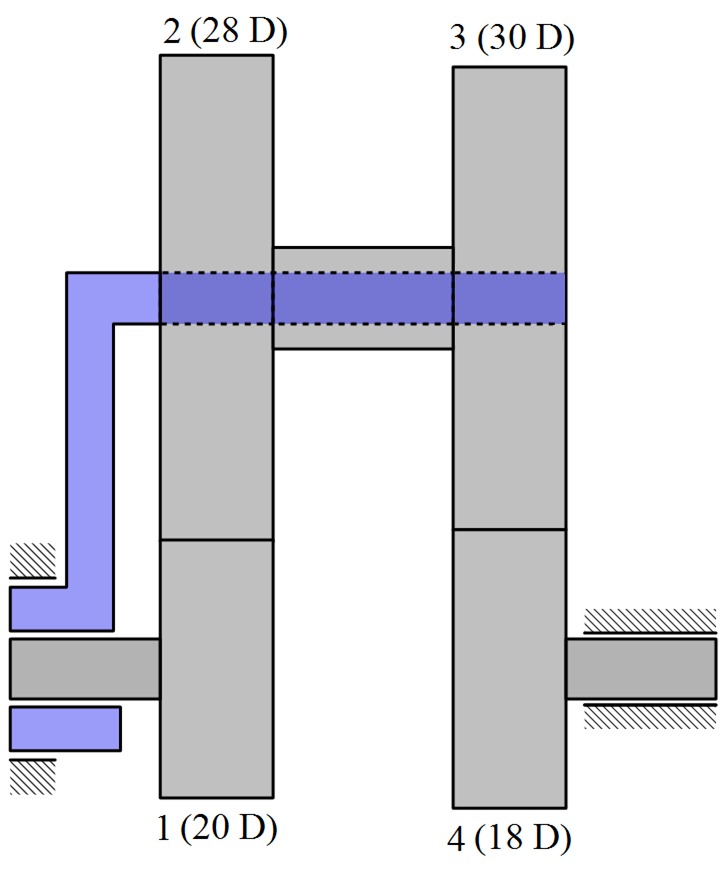

A simple planetary gear set already requires care because the carrier moves. In compound planetary gear sets, this care increases: there is more than one train, more than one kinematic relationship and couplings that reduce the system's degrees of freedom.

Degrees of freedom
A planetary gear train with three principal elements may have two degrees of freedom when neither is fixed or prescribed. When braking an element, or imposing an input speed, the behavior of the third becomes determined. In composite sets, each train adds relations, but the couplings between them also add constraints.
Therefore, saying that there are two planetary gear sets is not enough. It is necessary to know if the sun gears are on the same axis, if the carriers are common, if a ring gear is connected to another gear or if any element is fixed to the housing.
Couplings between gears
When two gears are rigidly coupled, they share the same angular velocity. This restriction may allow treating part of the system with a single equation, as long as the coupling belongs to the correct elements of the analyzed relationship.
Couplings involving carriers require more attention. The carrier is not just another gear; it defines the relative frame of reference used to calculate the train value. If two carriers are coupled, or if one carrier is coupled to a gear on another train, the writing of the equations needs to represent this condition explicitly.

Automotive differential
The differential allows the wheels on the same axle to rotate at different speeds during a curve. In a straight line, both wheels tend to rotate at the same speed. When cornering, the outer wheel travels longer and needs to turn faster than the inner wheel.
In an ideal symmetrical differential, the speed of the planet carrier relates to the average of the speeds of the two wheels. In conceptual form:
This expression explains a well-known behavior: if one wheel completely loses resistance and rotates freely, the other may receive little traction capacity in an open differential. The problem is not that the mechanism "failed"; it is fulfilling the kinematic relationship it was built for.
Limited slip differential
Limited slip differentials appear to reduce this inconvenience. They introduce resistance to excessive speed differences between the wheels, through clutches, special gears, fluids or other resources. The objective is to preserve the function of allowing cornering without letting a free wheel completely dominate the response.
Analysis workflow
- divide the mechanism into recognizable planetary gear trains;
- write the kinematic equation for each train;
- list the speed couplings between gears and carriers;
- add entry, exit conditions and fixed elements;
- solve the system of equations, maintaining coherent signs and references.
This approach transforms compound planetary gear sets into organized systems of equations. The alternative, trying to see a final relationship directly in the drawing, usually leads to reference and sign errors.
